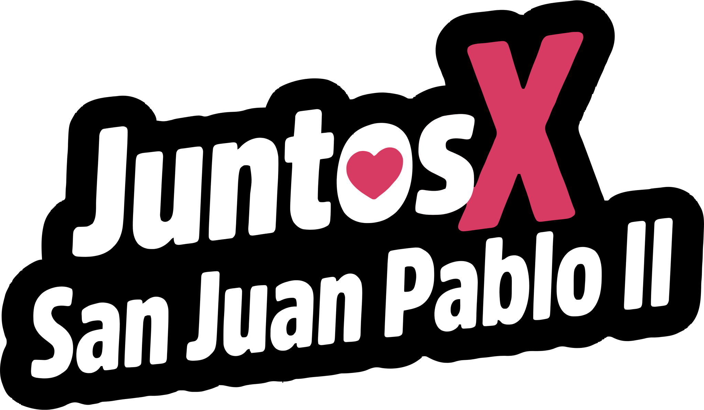

¡No tengáis miedo!
Abrid de par en par las puertas a Cristo.

- PRESENTA -
La inspiración de nuestro equipo Juntos x San Juan Pablo nos presenta esta sección de frases motivadoras y significantes para tu día, y esta es para tu día:
Cargando la frase del día...